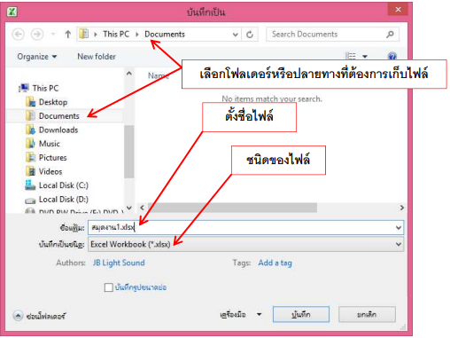

เครื่องมือต่างๆ (Tool)
 |
|||||
|
บันทึกแฟ้มเป็น (save as) เลือกโฟลเดอร์หรือปลายทางที่ต้องการเก็บไฟล์ |
||||
| ต้องการเก็บไฟล์ เปิดสมุดงาน หรือเปิดไฟล์ CTRL + O | |||||
| การเรียงลําดับข้อมูล | |||||
| การค้นหา แทนที CTRL + F | |||||
| การคัดลอกข้อมูล CTRL + C | |||||
| วางข้อมูลจากการคัดลอก CTRL + V | |||||
| การเรียกใช้งานฟังก์ชัน สูตรต่างๆ | |||||
| ตัวกรองข้อมูล | |||||
| การแยกข้อความเป็นคอลัมน์ใหม่ | |||||
| การเอารายการที ซํ้ากันออก | |||||